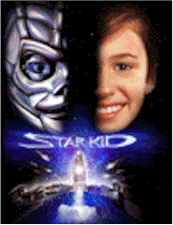

Contents | Features | Reviews | Books | Archives | Store |
 |
|
| Movie Credits | Buy It! |
Star Kid
Review by Elias Savada
Posted 16 January 1998
|  | Written and Directed by Manny Coto Starring
Joseph Mazzello, Richard Gilliland, |
Star Kid is aimed straight for the youth market and that is probably where it will stay. Producer Jennie Lew Tugend (Free Willy 1,2 and 3) has done wonders with a pittance ($10 million) for a budget while still allowing director-writer Manny Coto to tell a tender story about adolescent inadequacies. Coto, who bombed with Dr. Giggles (1992), his last feature outing, filmed this project about a year ago as The Warrior of Waverly Street, a dual reference to self-conscience seventh-grader Spencer Griffith (Joseph Mazzello), who attends the Waverly Street School, and "Cy," the seven-foot Phase One Assault Cyborsuit that crash lands on earth in the small town of Crystal Bluff one autumn evening.
Spence has no gumption, either in standing up to school bully Turbo Bruntley (Joey Simmrin, earlier of Nine Months and Little Giants) or talking to wannabe girlfriend Michelle (Lauren Eckstrom). He gets no sympathy from his older sister Stacey (Ashlee Levitch) or his job-obsessed dad Roland (Richard Gilliland). Mom died two years earlier. The only adult role model Spence can lay anchor to is his science teacher, Janet "Feed Your Fears" Holloway (Corinne Bohrer), who is ultimately drawn into the family circle when Spence has to use her bathroom. Yes, its part of the obligatory bathroom humor sequence. Mild mannered Spence finds comfort between the glossy covers of Midknight Warrior until the pulp hero is replaced by the super-powered Cy, on a mission to save a race of Trelkins, small beings (think Yoda X Ewok X acne) whose world is being attacked by a horde of space bugs ("Starship Troopers" lite) known as Broodwarriors.
Spence conveniently is the only witness to the crash of "Cy" at the local junk yard. Escaping the confines of his room, he ventures out and finds the animatronically-endowed suit (very reminiscent of a Teenage Mutant Ninja Turtle without the shell) among the rusted-out corpses of older earthbound vehicles. Spence becomes the biotic host of the cyborsuit and their initial melding (mind and body) leads to numerous pratfalls as the clumsy duo bounce around through a prolonged spatial adjustment sequence while Edgar Winter belts out the old Steppenwolf tune "Magic Carpet Ride" on the soundtrack. The youngster is years away from his driver's permit and the prototype tin suit is years behind in dealing with human emotions. After scaring the bejeepers out of Turbo, Cy malfunctions at the local fall fair when it mistakes a costumed T-Rex for an alien adversary (a poke of fun at Mazzello's earlier association with the quintessential dinosaur flick "Jurassic Park"), leading to Suitman and Robin's rescue of Michelle from a falling rock-o-plane attraction.
The arrival of an intergalactic enemy in the guise of a slimy merciless Broodwarrior threatens the destruction of Cy (the only hope for the Trelkin race) and leads to the ultimate gunfight at the junkyard corral. On a more refreshing note, Spence's character realizes Turbo is much more useful as a friend than a foe, and the recruiting of the former bully in the battle to save our planet is handled nicely.
Guess who wins. No peeking. Good guess! Of course, there's a happy ending. Product promotion (Ben and Jerry's, Triumph Motorcycles) is keep to an acceptable level – nowhere near as bad as the latest James Bond salebration. Mazzello (acting in films since 1990) has become the late '90s answer to Elijah Wood and has the potential to develop into a teen heartthrob.
Supporting cast are adequate in their roles, with the film bulked up by better-than-average effects. Us older folks won't put this at the top of our "must see" list, but if our kids are going to happen into a multiplex playing this film, it's wholesome entertainment that teaches our youngsters and ourselves about dealing with our insecurities and fellow man. And that isn't all that bad in my book.
Contents | Features | Reviews | Books | Archives | Store
Copyright © 1999 by Nitrate Productions, Inc. All Rights Reserved.